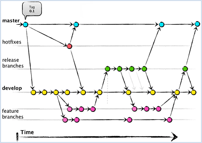

Imagine working on your application. You might have a project that’s developing the next release, one for ongoing day to day maintenance, one for a minor enhancement, a few bug fixes happening, and one for a new feature being added to the
existing version.
That’s ok as long as the programs you are changing don’t overlap much. Wait, we said new release work is being done. Unless you are renaming everything you work on, I think there might be a lot of overlap in that project.
In the scenario above, pessimistic checkout can work, but in the end, you’ll feel like a trained poodle after all the hoops you’ll need to jump through. If you enjoy being a trained poodle, you can stop reading here, if you’d like to hear
about a better way? follow me ↓.

Common Feature
- Lets us take a collection of files and save their current contents
- Saving is called "committing" the changes
- When we commit the changes we can provide a message that explains why
- Then we can make changes to the files and:
- See what's changed (diff)
- Easily undo the changes (or some of them)
- Or commit these as new versions of the files
- Over time this builds up a timeline of changes to the files
Git fundamentals
Three locations: Working directory, index, repository
Git commands copy files between these locations
The First Beginning with Git
git config
git config --global user.email example@example.example
git config --global user.name "example"
git init
We have to tell Git where the "root" of the repository is.
Everything below this directory can be managed by Git.
It's possible to have multiple repositories on the computer,
but don't put a repository inside another
git status
What's the state of the repository?
with git status we can know the exact status of the our git's repository
git add
- git add tells Git to copy the file to the index
- If the file is untracked it also starts tracking it
- This does not commit the file to the repository
git commit
Takes all the added changes, bundles them up, saves them
You provide a description, called the commit message
Making and committing a change
let's assume that we have added some other contents and remove some others.
For Example, let;s add two Paragraphs <p> and modifie one list Element <li> and delete one <div> block
Now after saving the changes that we have made in the working directory, we can compare the old file in the repository
with the new version in the working directory, and we can achieve that by running the command git diff
Notes:
you can have multiple repositroies.
if git is paying attention to a file then we say that git is tracking the file.
"git add" told the Git about the specific file "so it know about it."
cashe - stage = index.
repo = repository.